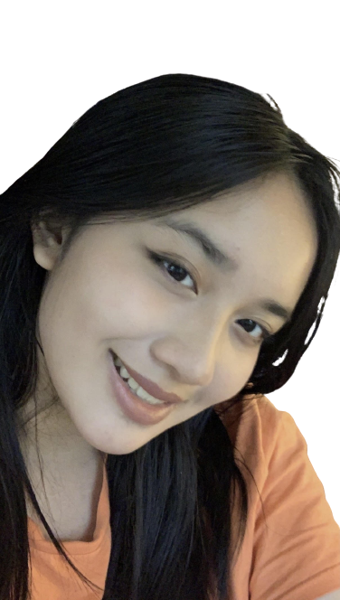
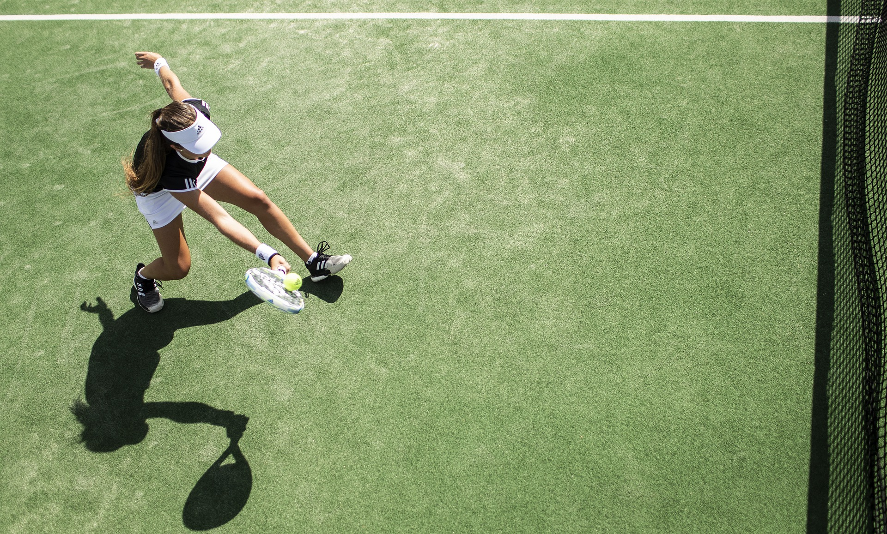
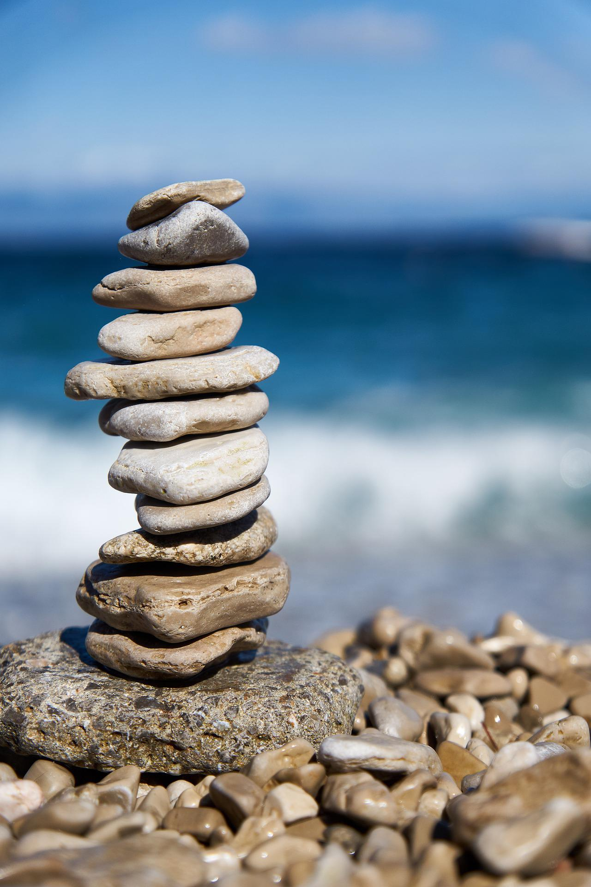

Hi, I'm Christine
I am currently a sophomore high school student who spends too much time on the internet. I was born in Boston, Massachusetts, but wasn't raised there. I’m relatively new to coding and definitely want to advance my skills. Additionally, I enjoy cooking, making connections, and traveling.
I hope, as you view my page, you get to learn a little more about me !
Goals and Interests

Progressing in Tennis
Though I don’t watch much tennis, I enjoy playing tennis and I am even on the varsity team in my school. However, I want to progress even more and even move up a rank on my team.
Making Connections
I’m, what I consider myself, an introvert, but love being social and meeting new people. I believe that being more involved in general has major prevalence in making those connections. So, one of my major goals is to become more involved!
Becoming More Mindful
According to many sources, becoming more mindful is a way to relieve stress and enhance health overall. It helps yourself to sway away from compulsions and temptations and to simply focus on yourself. Using this practice has shown me significant benefits for myself, and I definitely want to keep up the routine.

Images are from Pixabay.